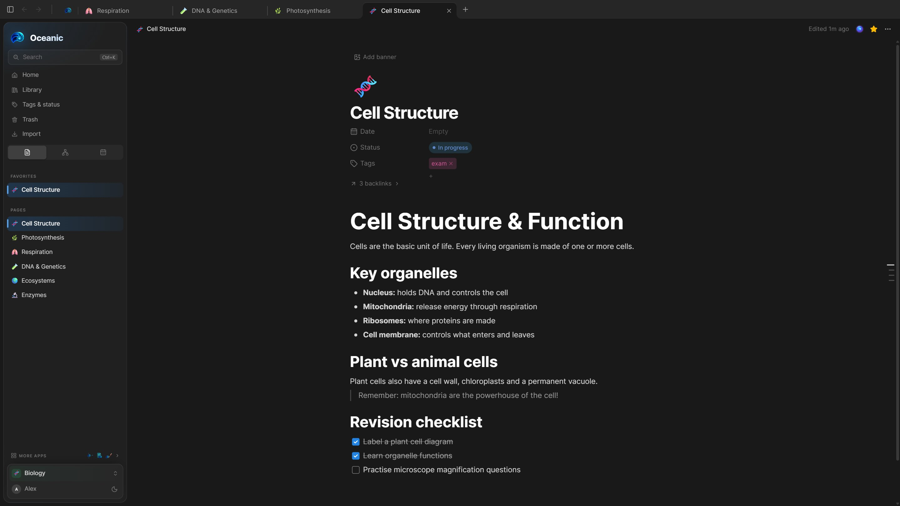

Notes that keep up with your classes
Write in blocks, nest pages inside pages and link ideas together. Every page has a date, a status and tags, so you can see what's due and what's done.
- Headings, lists, tables, math and images
- Sub-pages and backlinks
- Import from Markdown, Word or Notion
